Filter Faceoff: Encouraging Creative Self-Expression Through Playful Filter Usage
In a social media landscape dominated by curated perfection and filters, Instagram users face increasing pressure to maintain an idealized online presence, often at the cost of their mental wellbeing and authentic self-expression.
Designed as a project for the Persuasive Design course at Carnegie Mellon University's Human-Computer Interaction Institute, Filter Faceoff transforms Instagram's selfie filter feature from a tool that promotes current beauty standards into a playful and creative group experience.
Team: Likhitha Chintareddy, Nandini Nair, Mia Hoffman, Nicole Araya, Sree Mahit Munakala, Sidra Manzoor
I was a UX Researcher for this project and collaborated with students in the MHCI program at Carnegie Mellon. I contributed to the project's literature review, user research, design strategy, and user testing. Filter FaceOff was my first deep-dive into understanding how psychological theories can inform interaction design.
Background
Selfie filters, though widely used on Instagram, can have deleterious effects on young womens' self-esteem and wellbeing, adversely impacting their perception of self and promote body dysmorphia.1
Within this broader context, we examined users' motivations for filter usage on social media and how filters shape their concept of self.
Self-Discrepancy Theory states that individuals compare their "actual" self to internalized standards or the "ideal/ought self". People who see a larger gap between their actual and ideal selves (i.e. self-discrepancy) tend to compare themselves more to others, harming their self-esteem.
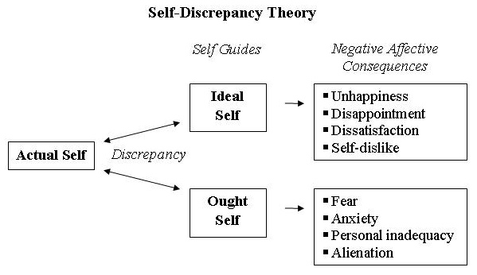
Source: Wikiversity
The Challenge
How might we design a persuasive prosocial intervention that subverts selfie filters into tools that promote users' creativity, self-esteem, and open self-expression?The Solution
Filter Faceoff is a game that implicitly motivates players to express themselves creatively, by leveraging group dynamics between friends (social proof!!).
Players are challenged to respond to funny prompts by taking a selfie using quirky in-game filters. In a limited time, they share the selfie in an Instagram groupchat with other players, who then vote on which selfie was the best response to the prompt.
→ By helping players actively engage with prompts while freely choosing filters and poses, the game encourages creative and uninhibited expression.
User Research
Research Questions: Our research began by exploring the domains of social media addiction, anxiety, and dark patterns before we focused on selfie filters usage on Instagram as our primary case study. We wanted to understand this space through the following questions:
Q1. What are the different considerations that influence users' self-presentation decisions on Instagram?
Q2. What systemic factors influence how users engage with and perceive filters?
Q3. How does filter usage relate to users' self-esteem and mental wellbeing?
Target User: Our chosen audience for this project are women aged 18 to 24 who are frequent Instagram users, as they are the most impacted by filter use according to our research. This demographic, often in transitional phases of life, provides unique perspectives on filters' potential to experiment with identity presentation.
Focus Group: We conducted 1 focus group session using the New Metaphors framework10 to understand users' approach to Instagram and their mindset around the use of features like filters, likes, comments, posts, and stories. Key metaphors that participants selected include:
- "Waiting Room Effect" Users experience anxiety between posting and receiving feedback, revealing a paradoxical engagement loop where negative feelings coexist with increased posting behavior.
- "Balancing Act" Instagram posting involves System 2 thinking11 and deliberate choices between authentic and curated content, with users carefully considering audience perception rather than posting casually.
- "Burned Toast"/"Sun in your Eyes" vs "Room Lighting"/"Temporary Covering" Users make a clear psychological distinction between filters based on their intended purpose (Insta stories → body modification filters = negative; Grid Posts → aesthetic filters = positive)
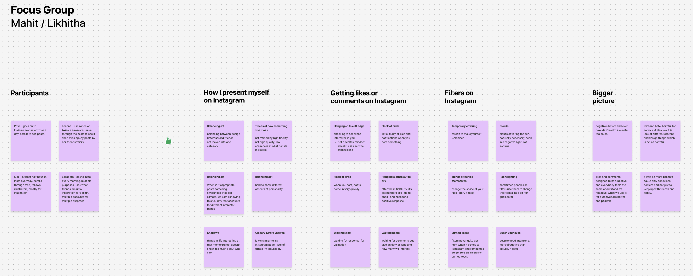
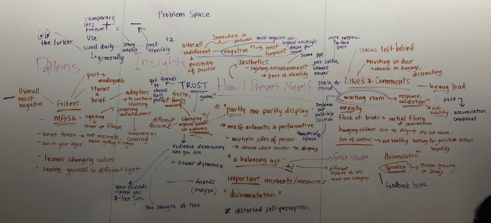
Analysing our focus group notes and finding patterns, insights
Literature Review: We examined 11 peer-reviewed academic papers published between 2010-2020, on social media behavior and its psychological effects.
- Self-Presentation: Users balance between authentic and idealizated self-presentation online, from using filters to buying engagement ( Rosen et al., 2015;3 Hogan, 20104 ).
- Psychological Impact: People with lower self-esteem and higher self-discrepancy tend to use social media more intensively, often leading to increased social comparison and further impact on mental health ( Stapleton et al., 20175; Kim et al., 20206).
- Social Feedback: Audience response through likes and comments significantly shapes user behavior and self-perception ( Bareket-Bojmel et al., 20167; Hong et al., 20208).
- Evolution of Digital Spaces:"Finstas" (fake Instagram accounts) offer users a space for authentic sharing away from pressure for perfection (Xiao et al., 20209).
After conducting this review, I identified Self-Discrepancy theory as the central framework linking social media usage to self-presentation and psychological wellbeing. This guided our understanding and approach of the problem.
User Interviews: We conducted 5 interviews with women aged 18-24 (our target audience) on their filter usage and self-presentation.
Expert Consults: We sought out 3 experts in computational design, human-computer interaction, and technology journalism to better understand the systemic influences and potential opportunities in social media filter usage.
- Kyuha (Q) Shim, Associate Professor of Design and Director of Computational Creativity Lab at Carnegie Mellon University
- Cori Faklaris, Doctoral student researcher at the Carnegie Mellon University Human-Computer Interaction Institute.
- Tate Ryan-Mosley, Data reporter for MIT Technology Review, author of article on impact of beauty filters on young women12.
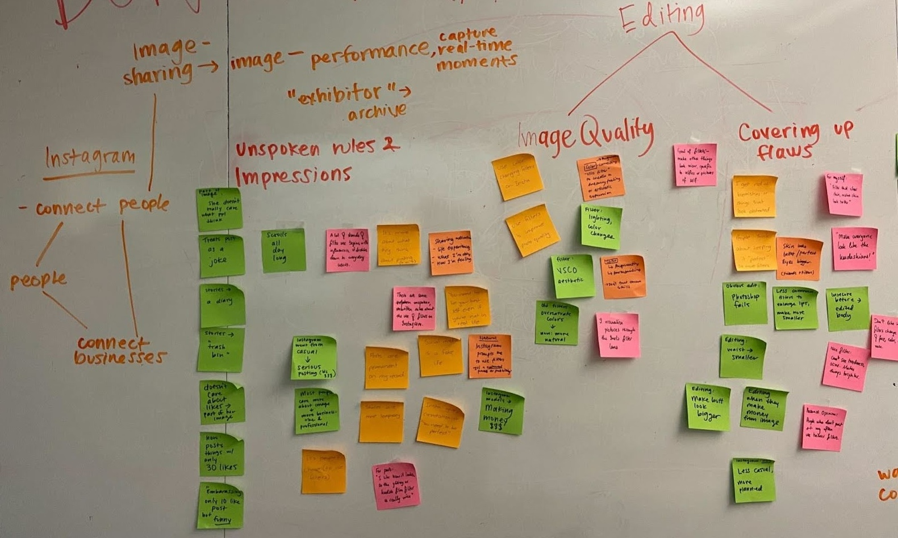
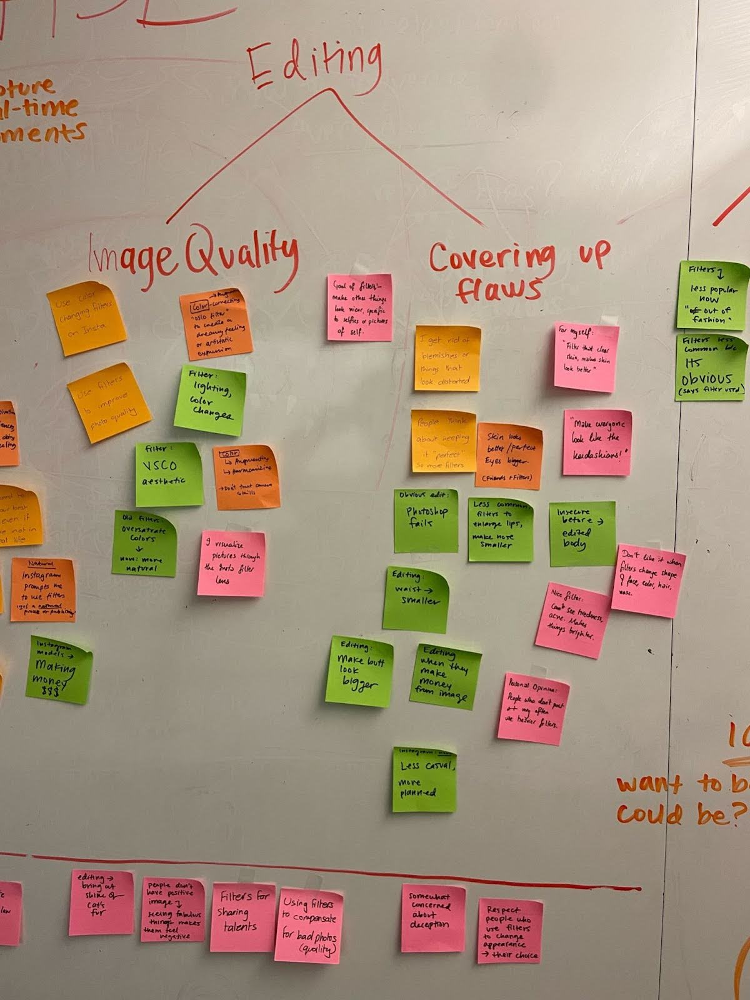
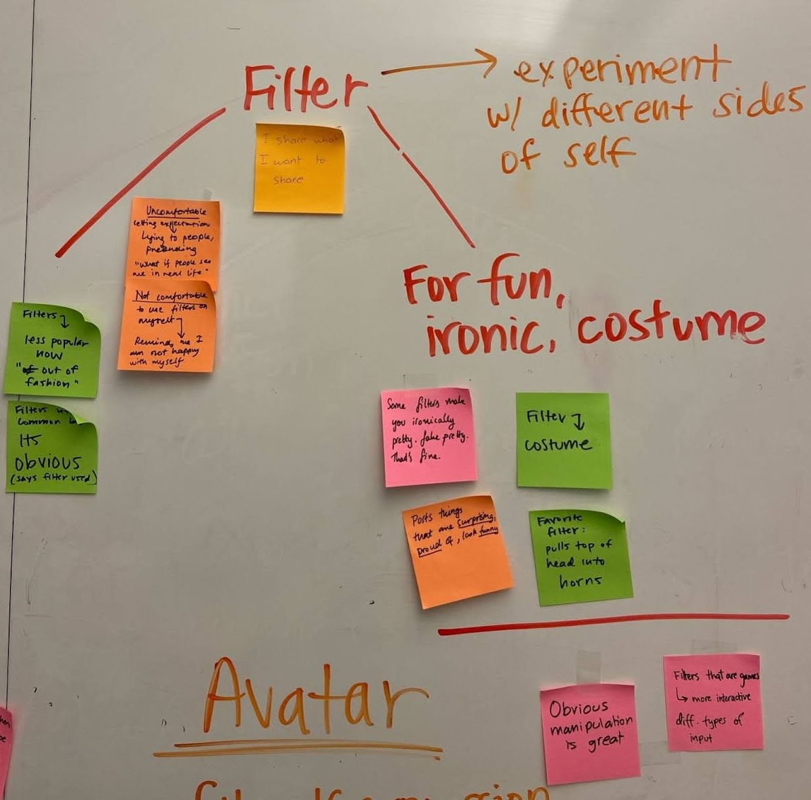
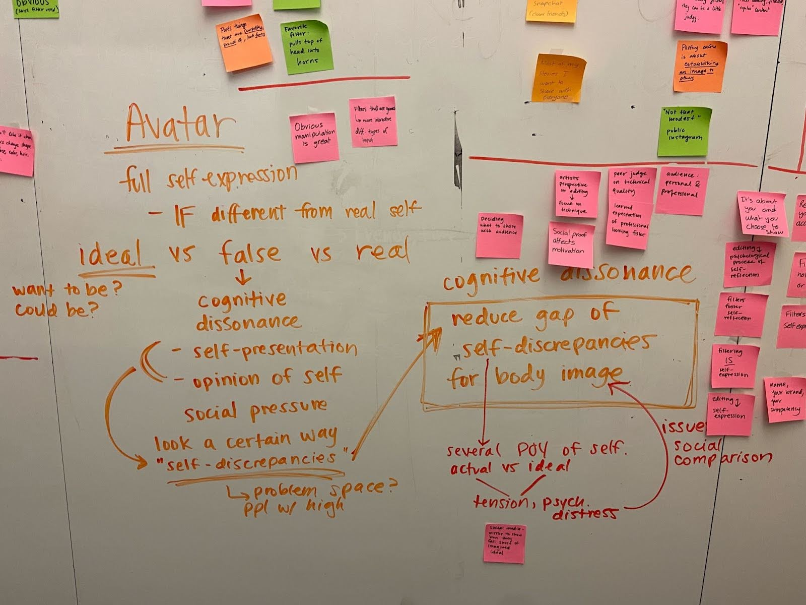
Affinity Diagramming of insights from user interviews and expert consults
Key findings from User Interviews and Expert Consults:
→ Normative Expectations of Various Audiences Cause Users to Self-Censor
Users: Broader audiences receive more normalized content; trusted circles see authentic expression.
Experts: Recommend creating spaces where creative exploration trumps conformity, using filters for "visual performance" rather than beauty enhancement.
→ Existing Mental States Amplify Filter Usage Patterns
Users: Patterns of filter usage vary with self-esteem. Low self-esteem users "fix" perceived flaws. Many report decreased reliance on beauty filters as confidence grows.
Experts: Confirm filters are neutral tools that amplify existing mental states. Faklaris notes: "whatever your mental state is offline, social media will amplify it."
→ Growing Distance Between Real and Online Self Creates Anxiety Through Self-Discrepancy
Users: View filtering as natural self-presentation but are anxious about gap between their filtered and real-life appearance. Many report feeling like they're "lying" to their audience.
Experts: Identify how this discrepancy between real and presented self creates psychological tension. Ryan-Mosley notes, "anxiety emerges from the dissonance between the two selves."
Design Opportunity
Creating safe spaces for authentic self-expression through creative filter usage, emphasizing reflection and diverse forms of digital self-representation.
Persuasive Design Strategies
We wanted to nudge our users to shift their motivations for using selfie filters towards creative self-expression to bolster their self-esteem. We leveraged the embedded design approach, making use of implicit or concealed techniques to subtly persuade users towards a course of action. We did not use an explicit intervention as it could trigger psychological reactance if users realize they are being manipulated. The following embedded techniques informed our overall persuasive intervention design strategy:
- Intermixing: Intended content of a design is mixed with “off-topic” materials to make the on-topic content less conspicuous and therefore more approachable for users.
- Obfuscation through Misdirection: Concealing or stealthily introducing the persuasive content or true purpose of an intervention.
Ideation
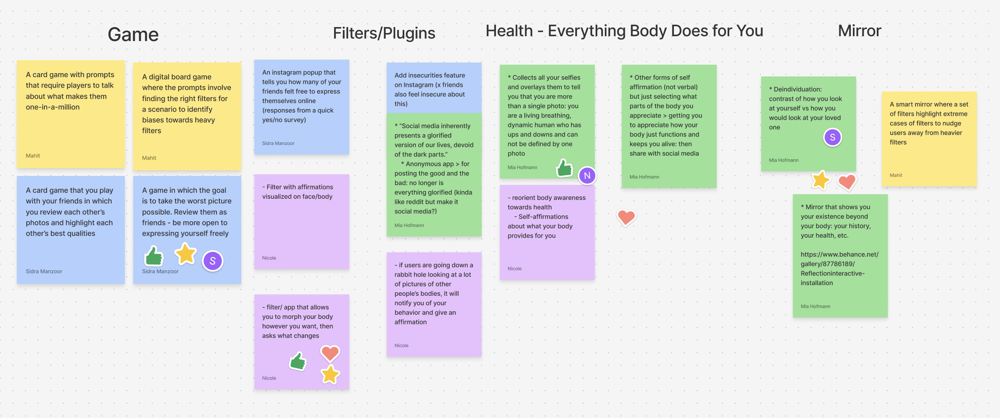
We rapidly ideated about 15 initial ideas inspired by social psychology and persuasive design theories, and pitched it to the class. After receiving feedback, we decided on pursuing the idea of the "Bad Selfie Game" where players focus on taking photos to answer prompts without caring about how they look.
Prototyping
A group of five friends aged 18-24 tested our prototype. The prompts were situations designed to trigger hilarious or outraged reactions. Players, after seeing prompts on Google Slides, respond by taking a selfie using Instagram filters. They share photos on an Instagram group chat. A survey was conducted after the testing session.
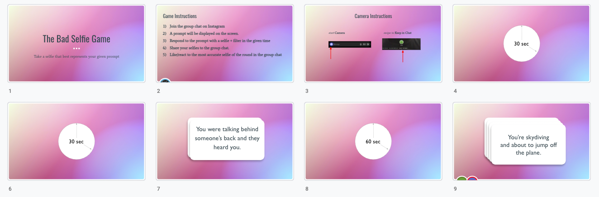
- Players had an averaged group rating of 3.5/10 for how fun the game was.
- Players complained that filters and groupchat being in Instagram, while prompts were in a third-party app (Google Slides) was complex and distracted from gameplay (“UX was difficult because we couldn’t find filters”).
- Testing revealed a timing challenge for each round: too much time led to perfectionism, too little prevented filter discovery. Future tests focused on finding the optimal duration.
We developed two prototypes in parallel: a mid-fidelity Figma prototype for an in-app Instagram game, and a physical card game. This was to test digital vs physical format efficacy, persuasive elements, filter use, and optimal round timing.
Prototype 1: Physical Cards
We tested the game on a friend group of 6 people over 5 rounds. Players drew a prompt card from the card deck.
Then they took a selfie using Instagram filters within a time limit to answer the prompt, and shared their selfie with the in-person group.
The selfie voted the funniest earned points, with bonus points for posting on Instagram Stories.
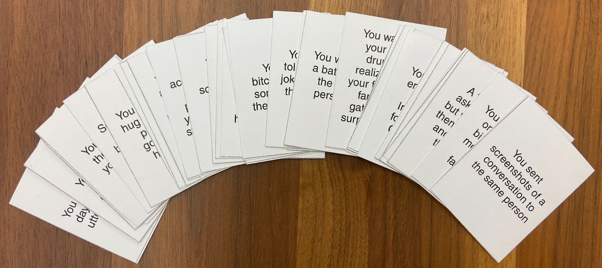
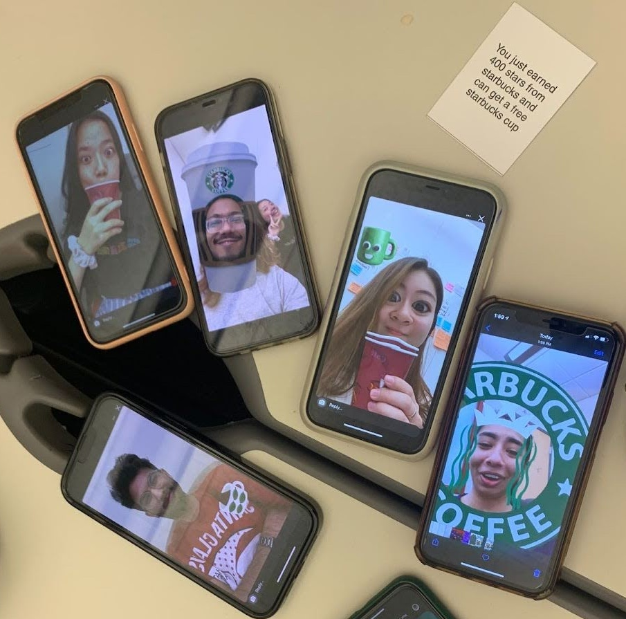
Physical prompt cards and selfies from in-person testing session
This iteration was the digital version of Prototype 1, with the filters and gameplay all intended to be embedded into the Instagram mobile app. The prototype was designed on Figma and was tested using the "speed dating" technique.
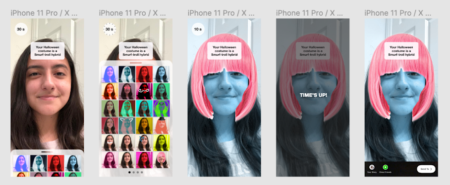
Observations and Insights from the Two Med-Fi Prototypes:
- Digital version of the game was preferred over a physical version.
- Prompts generated laughter and excitement. The game was rated 7.2/10 for fun (an increase over last iteration's 3.5!)
- The voting mechanism developed competitive spirit more than the points system.
- The additional incentive (bonus points) to post on Instagram was successful — several players posted their funny/creative selfies on their Stories!!
- Participants emphasized that group play was essential as they wouldn't enjoy the digital version alone — social dynamic was key to the game's success.
The final version of our game incorporated insights we gained from previous rounds of user testing. We renamed our game from "The Bad Selfie Game" to “Filter Faceoff” as it conveyed the competitive nature of the game more effectively and also highlighted filters as the primary game feature.
My teammates Mia and Nicole took the lead in the UI design implementation, and utilised Meta's SparkAR tool14 to create filter effects for our multiplayer game.
Implementing AR filter effects of the game in SparkAR Studio (left). A player responds to game prompt (right).
Feedback
Our final test was with a female friend group aged 21-22 who were frequent Instagram users (our target audience). They enjoyed playing the game and some were also motivated to post their creative selfies on their real Instagram accounts!
"Unironically fun"
"Genuinely liked it... usually trying to hype up my friends [this gives me the chance to be hyped]"
"Give us the release date!"
What's next?
The testing so far shows our game is successful as a persuasive intervention aimed at behavioral change.
But a change in attitude is our goal.
To measure our game's long-term impact, we’ll conduct a months-long study with a friend group of frequent Instagram users, having them play the game weekly. We’ll analyze their self-presentation on Instagram and interview them to assess any changes in their motivations for using selfie filters. I'm also curious about how changing the game’s visual design or verbage may impact the way users play the game and answer the given prompts.